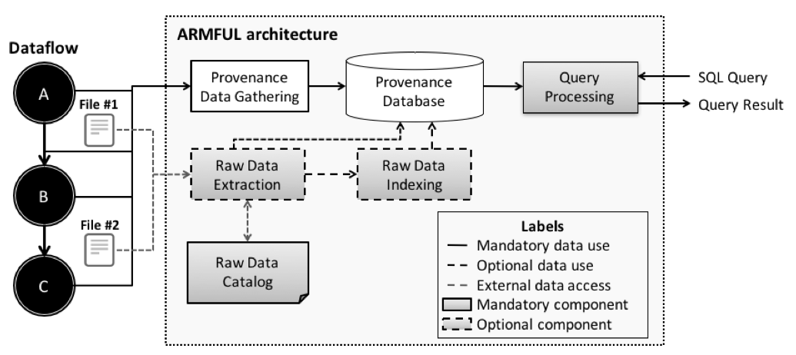

ARMFUL architecture
ARMFUL is being developed within the context of the HPC4E project, as part of the Ph.D. thesis of VÃtor Silva at COPPE / Federal University of Rio de Janeiro and NACAD, under the supervision of Prof. Marta Mattoso (COPPE/UFRJ) in cooperation with Daniel de Oliveira (UFF) and Patrick Valduriez (LIRMM / INRIA). ARMFUL analyzes scientific data by retrieving scientific data from files and relating them through dataflow provenance data. We use a relational database to manage provenance and scientific data to benefit from its analytical query support in dataflows. In addition, Database Management Systems (DBMS) present well-known algorithms and strategies to guarantee atomicity, consistency, isolation, and durability in transactions, while they also have consolidated solutions for enabling concurrency control and recovery. To support scientific data analysis, the following services are provided by ARMFUL during the execution of scientific applications:
- access to raw data files while they are being generated;
- parse raw data to find relevant data;
- extract relevant subsets of raw data;
- index over data regions of interest;
- prepare scientific data for queries; and
- runtime query relating scientific data from different files, provenance data, and performance execution data.
Components
ARMFUL architecture presents the following four components, as presented in Figure 1: Provenance Data Gathering, Raw Data Extraction, Index Generation, and Query Processing. In the same way as Scientific Workflow Management Systems (SWMS) with provenance support, white components correspond to the capture of provenance data and their storage in a provenance database. Provenance Data Gathering component aims at capturing provenance data and execution metadata generated during the parallel execution of scientific applications, and storing those gathered data in a provenance relational database. The provenance relational database follows a data model that presents the pointers to the raw data files and metadata that represent scientific data contents, which should be extracted from files to support scientific data analysis. Our PROV-compliant Entity Relationship diagrama, named as PROV-Df, is presented in Figure 2 and more information about it can be found here. 
Figure 1. Components of ARMFUL. This figure was extended from our Supercomputing poster

Figure 2. PROV-Df diagram
Gray components describe the steps to extract scientific data from files, to generate indexes over the scientific data, and to query provenance and scientific data from a database. To support scientific data analysis, Provenance Data Gathering component manages the relationships among files, since Raw Data Extraction and Index Generation components need the file references to access and extract scientific data from files. Moreover, they enable queries that associate scientific data elements from multiple files. Following, we discuss each one of these gray components in detail.
Raw Data Extraction component aims at reading the contents of raw data files, parsing them and retrieving selected contents that are relevant according to the attributes chosen by the user. To achieve this goal, this component follows four steps: content read, tokenization, contents filtering, and parsing. More details about these steps can be found in our Supercomputing poster.
Index Generation component is responsible for applying indexing techniques in specific contents from files to improve direct access to specific regions of the scientific data space and managing metadata associated to the dataflow. Besides the content read from raw data files and parsing, this component has to generate indexes to the accessed scientific data contents according to the defined indexing technique (e.g., positional indexing or bitmap indexing).
Query Processing provides a mechanism to query provenance and scientific data stored in our provenance database, by receiving user input parameters and running the specified query, and returning query results in a CSV file. This component varies its behavior according to the chosen strategy for extracting or indexing scientific data from files. More details about the behavior of this component can be found in our Supercomputing poster.
Instantiation of ARMFUL architecture
A-Chiron SWMS
A-Chiron is an implementation of ARMFUL with Chiron SWMS. Since the main contributions of ARMFUL are supporting raw data extraction and index generation based on the invocation of external programs (ad-hoc programs or third-party tools), we developed different cartridges to support these features in A-Chiron. More details about this implementation can be found here.
DfAnalyzer tool
Considering the components from ARMFUL architecture, we instantiate them as DfAnalyzer to be coupled to existing SWMS, data processing engines (e.g., Spark) and scientific applications using third-party tools (e.g., MPI, OpenMP, and libMesh library). DfAnalyzer tool keeps all the parallel execution control at the code of the SWMS or the scientific application. We present more details about DfAnalyzer here.